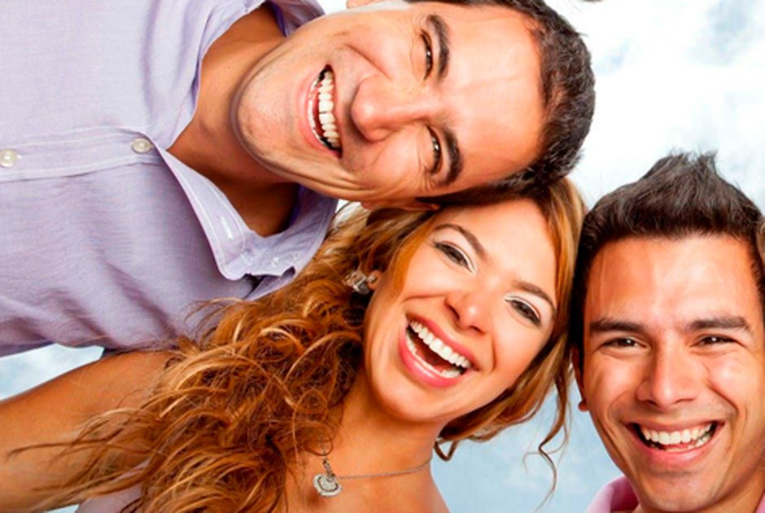

Implantes dentários
Reposição de um dente ou de toda a arcada com pino de titânio integrado ao osso. Mastigação e sorriso de volta ao natural.
Maringá · desde 2017
Clínica odontológica especializada em implantes dentários, próteses e reabilitação oral. Procedimentos modernos que devolvem a saúde bucal e a autoestima de quem senta na nossa cadeira.

Inspirar, cuidar e emocionar pessoas, para juntos distribuirmos sorrisos e felicidade pelo mundo.
Missão da Centermax Odontologia
A clínica
A Centermax Odontologia está no mercado desde 2017, com atendimentos em diversas áreas que envolvem procedimentos modernos e avançados na saúde bucal. Oferecemos tratamentos que resgatam a autoestima e a saúde bucal de todos os pacientes.
Ficamos na Avenida Mandacaru, em frente ao Hospital Universitário, num ponto fácil de chegar de qualquer região de Maringá. Cada tratamento começa por uma avaliação sem pressa, em que a gente explica o que está acontecendo, quais são os caminhos possíveis e quanto custa cada um — antes de começar qualquer coisa.
O que fazemos
Do preventivo ao mais complexo. Consulte disponibilidade e valores direto no WhatsApp — cada plano é montado depois da avaliação.
Reposição de um dente ou de toda a arcada com pino de titânio integrado ao osso. Mastigação e sorriso de volta ao natural.
Prótese fixa, removível e protocolo sobre implantes. Devolvemos os dentes perdidos com encaixe firme e aparência natural.
Lente de contato dental e faceta de porcelana para corrigir forma, cor e espaços entre os dentes com desgaste mínimo.
Clareamento em consultório ou com moldeira em casa, acompanhado de perto para chegar ao tom certo sem sensibilidade.
Aparelho fixo e alinhadores para corrigir o posicionamento dos dentes e a mordida, com acompanhamento mês a mês.
Endodontia para salvar o dente comprometido pela cárie profunda ou por trauma, eliminando a dor na raiz do problema.
Limpeza, raspagem e tratamento de gengiva. É o cuidado que segura o problema antes de ele virar tratamento grande.
Remoção do siso, extrações e pequenas cirurgias, incluindo enxerto ósseo para preparar a área que vai receber implante.
Não achou o seu caso na lista? Mande sua dúvida no WhatsApp.
Nossa especialidade
O implante é um pino de titânio instalado no osso que faz o papel da raiz do dente perdido. Sobre ele entra a coroa, que devolve a mastigação, a fala e a aparência. Serve para repor um dente só ou uma arcada inteira.
Exame clínico, radiografia ou tomografia para medir o osso disponível e entender o seu caso.
Você recebe o plano de tratamento com as etapas, os prazos e o orçamento fechado antes de começar.
Instalação do implante com anestesia local, em sessão ambulatorial, com orientação completa de pós-operatório.
Depois da integração ao osso, entra a coroa feita sob medida na cor e no formato dos seus dentes.
Dúvidas frequentes
Se a sua pergunta não estiver aqui, é só chamar no WhatsApp.
A cirurgia é feita com anestesia local, então não se sente dor durante o procedimento. No pós-operatório é comum haver algum inchaço e desconforto por poucos dias, controlados com a medicação prescrita.
Depende de cada caso. Em média, entre a cirurgia e a colocação da coroa definitiva passam de três a seis meses, tempo em que o implante se integra ao osso. Em alguns casos é possível instalar um dente provisório no mesmo dia.
Na maioria das vezes sim. Existem técnicas de enxerto ósseo e levantamento de seio maxilar que reconstroem a área antes do implante. Só a avaliação clínica com radiografia ou tomografia responde o seu caso.
Consulte as condições e os convênios atendidos pelo WhatsApp (44) 99940-4171. A clínica também trabalha com parcelamento.
Sim, o atendimento é com hora marcada. O agendamento é feito pelo WhatsApp (44) 99940-4171 ou pelo telefone (44) 3040-4171.
Na Av. Mandacaru, 1799, Loja 02, Vila Santa Izabel, em Maringá — em frente ao Hospital Universitário. Veja o mapa aqui embaixo.
Galeria
Arraste para o lado para ver mais. Toque em uma foto para ampliar.
Contato
Estamos na Avenida Mandacaru, em frente ao Hospital Universitário de Maringá.
Av. Mandacaru, 1799 — Loja 02
Vila Santa Izabel, Maringá — PR, 87080-000
| Segunda a sexta | 9h — 12h e 14h — 18h |
|---|---|
| Sábado | 9h — 12h |
| Domingo | Fechado |
Chame no WhatsApp, marque sua avaliação e descubra qual é o melhor caminho para o seu caso.